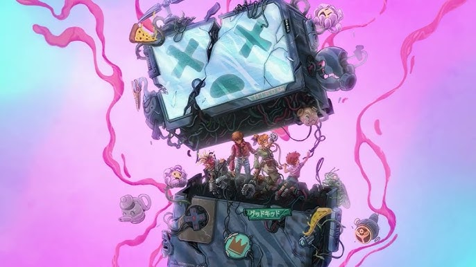

Can We Hangout Sometime? è l'ultimo album uscito della band Good Kid mostrando ancora una volta come funziona la loro armonia.
Il loro nuovo album ha riscontrato un successo clamoroso dopo che alcuni dei brani sono stati suonati allo Streamer Awards 2025. Si, c'hanno messo abbastanza tempo per far rilasciare tutto l'album.

Can We Hangout Sometime? è noto per essere il brano più "bello" da loro rilasciato fin'ora, presentando brani che non ti danno noia di riascolatrli per la 100esima volta.
| # | Titolo | Durata |
|---|---|---|
| 1 | Rift | 3:02 |
| 2 | Eastside | 1:37 |
| 3 | Coffee | 2:12 |
| 4 | Cicada | 2:46 |
| 5 | Tea Leaves | 2:52 |
| 6 | Alone With Me | 2:32 |
| 7 | Ghost Keeper | 2:25 |
| 8 | Tornado | 2:19 |
| 9 | Wall | 2:51 |
| 10 | Ginger Lemonade | 2:59 |
Formazione: Nick Frosst (voce), Jonathon Kereliuk (batteria), Michael Kozakov (basso), David Wood e Jacop Tsafatinos (chitarra).